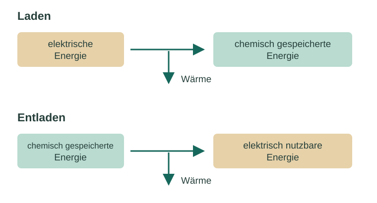

Informieren
Erklärung und Beispiel öffnen
Vier Größen beschreiben verschiedene Seiten desselben Vorgangs. Du kannst sie nicht austauschen:
| Größe | Bedeutung | Einheit |
|---|---|---|
| Spannung U | Potentialdifferenz; elektrische Energieübertragung pro Ladungsbetrag | Volt, V = J/C |
| Stromstärke I | Übertragene Ladung pro Zeit | Ampere, A = C/s |
| Ladung Q | Übertragener Ladungsbetrag während eines Zeitraums | Coulomb, C |
| Energie E | Übertragene oder umgewandelte Energie | Joule, J |
Die Ladung verknüpft den elektrischen Strom mit der Zahl der umgesetzten Elektronen. Für die Energie kommt die Spannung hinzu. Eine hohe Spannung allein besagt weder, dass viel Ladung übertragen wurde, noch dass eine große Energie abgegeben wurde.
Beispiel: gleiche Ladung, unterschiedliche Bedeutung
Zwei Modellzellen übertragen jeweils 120 C. Die erste arbeitet währenddessen bei konstant 1,0 V, die zweite bei 2,0 V. In beiden Fällen ist der übertragene Ladungsbetrag gleich. Bei der zweiten Zelle wird jedoch pro Coulomb die doppelte elektrische Energie übertragen. Für denselben Elektrodenprozess und gleiche Stromausbeute wäre der Stoffumsatz gleich, die elektrische Energieübertragung aber verschieden.

Beim Laden erhöht die zugeführte elektrische Energie unter anderem die chemisch gespeicherte Energie. Beim Entladen kann ein Teil davon elektrisch genutzt werden. Reale Zellen geben auch Wärme ab; Nebenreaktionen und Stoffverluste können die nutzbare Rückgewinnung weiter verringern. Gleiche Lade- und Entladeladung bedeutet daher noch keinen Energiewirkungsgrad von 100 %.
Nur zur Vertiefung: Energie berechnen
Bei während eines Vorgangs konstanter Spannung gilt für die Beträge E = U · Q; bei zusätzlich konstantem Strom E = U · I · t. Für einen vollständigen Lade-Entlade-Zyklus wird der elektrische Energiewirkungsgrad als η = Eab/Ezu angegeben. Die betrachtete Systemgrenze und der Anfangs-/Endzustand müssen vergleichbar sein.
A · Aussagen fachlich prüfen
Korrigiere jede falsche Aussage und begründe deine Entscheidung. Formuliere mindestens ein eigenes Zahlen- oder Alltagsbeispiel.
- „Eine Zelle mit 2 V liefert in jeder Situation doppelt so viel Ladung wie eine Zelle mit 1 V.“
- „1 A bedeutet, dass pro Sekunde ein Coulomb Ladung übertragen wird.“
- „Beim Entladen werden die Elektronen verbraucht; deshalb ist danach keine Energie mehr vorhanden.“
- „Eine Leerlaufspannung von 1,5 V beweist, dass gerade ein Verbraucher mit Energie versorgt wird.“
Hilfe 1
Ordne V, A und C den Größen zu. Unterscheide die Energiequelle von den Ladungsträgern und prüfe, ob ein Stromkreis geschlossen ist.
Hilfe 2
Q hängt von I und t ab. Elektronen werden an einer Elektrode abgegeben und an der anderen aufgenommen. Der Verbrauch reagierender Stoffe verändert den chemischen Zustand.
Musterlösung
- Falsch. Die Spannung gibt Energie pro Ladung an; Q folgt aus Strom und Zeit. Beispielsweise übertragen beide Zellen bei 0,100 A in 10 s jeweils 1,00 C.
- Richtig: 1 A = 1 C/s. Eine konstante Stromstärke von 1 A während 5 s ergibt 5 C.
- Falsch. Die Ladung wird nicht vernichtet. An der Anode frei werdende Elektronen werden an der Kathode aufgenommen; die chemische Zusammensetzung ändert sich. Eine entladene Zelle kann unter den Betriebsbedingungen nur noch wenig nutzbare elektrische Energie abgeben, besitzt aber weiterhin innere Energie.
- Falsch. Im Leerlauf ist die Potentialdifferenz messbar, aber es fließt idealisiert kein Strom zum Verbraucher. Zur laufenden elektrischen Energieübertragung braucht es auch Strom.
B · Zwei Vorgänge mit gleicher Ladung
Konstruiertes Modell: Beim Laden werden 200 C bei konstanter Zellspannung 2,2 V übertragen; beim anschließenden Entladen 200 C bei 1,6 V. Anfangs- und Endzustand des gesamten Zyklus seien vergleichbar.
- Vergleiche die beiden Ladungsbeträge und die Anzahl übertragener Elektronen ohne Rechnung.
- Begründe qualitativ, ob die abgegebene elektrische Energie genauso groß ist wie die zugeführte. Nenne einen möglichen Verbleib der Differenz.
- Eine andere Zelle überträgt beim Entladen dieselben 200 C in der halben Zeit. Welche Größe muss im zeitlichen Mittel doppelt so groß sein? Was folgt daraus ohne Spannungsangabe noch nicht?
Hilfe 1
Gleicher Ladungsbetrag bedeutet gleiche Anzahl elementarer Ladungen. Vergleiche anschließend die Energie pro Coulomb.
Hilfe 2
Beim Entladen sind es 1,6 J je C statt 2,2 J je C beim Laden. Aus Q = Ī · t folgt bei festem Q: kürzere Zeit erfordert größeren mittleren Strom.
Musterlösung
- In beiden Vorgängen werden 200 C und damit gleich viele Elektronenladungen übertragen. Die Übertragungsrichtung unterscheidet sich.
- Die abgegebene elektrische Energie ist kleiner: Jedes Coulomb ist beim Entladen mit weniger Energieübertragung verbunden. Die Differenz kann beispielsweise als Wärme an die Umgebung abgegeben werden. Ladungserhaltung erzwingt keine vollständige elektrische Energierückgewinnung.
- Die mittlere Stromstärke verdoppelt sich. Ohne Spannung bzw. Spannungsverlauf lässt sich weder die abgegebene Energie noch die elektrische Leistung eindeutig vergleichen.
Vertiefung · Energiewirkungsgrad berechnen
Berechne für die Daten aus B die zugeführte und abgegebene elektrische Energie sowie den Energiewirkungsgrad. Erkläre, weshalb das Verhältnis der Ladungen allein nicht genügt.
Hilfe 1
Bei konstanter Spannung gilt E = U · Q. Der Wirkungsgrad ist abgegebene Energie geteilt durch zugeführte Energie.
Hilfe 2
Nutze 2,2 V · 200 C und 1,6 V · 200 C. Die Einheit V·C entspricht J.
Musterlösung
Ezu = 440 J, Eab = 320 J. η = 320/440 ≈ 0,727 = 72,7 %. Die Differenz beträgt 120 J. Obwohl Qab/Qzu = 1 ist, liegt der Energiewirkungsgrad unter 100 %, weil die Entladespannung niedriger ist. Die Rechnung gilt für die vorgegebene Systemgrenze und konstante Spannungen.
Zurück zur Checkliste
Kannst du den Punkt jetzt an einer eigenen Erklärung oder einer neuen Aufgabe nachweisen? Ordne dich ein: sicher (selbstständig), teils (mit Hilfe) oder offen (noch Lernbedarf). Notiere bei Bedarf, was du noch klären möchtest.
Fachliche Quellen und Modellgrenzen
Fachlicher Abgleich: 09.10.2026. Texte, Aufgaben, Zahlenbeispiele und Grafiken sind eigenständig erstelltes Unterrichtsmaterial. Alle Rechendaten sind konstruiert, sofern nicht ausdrücklich als Referenzkonstanten bezeichnet.
- OpenStax · University Physics 2, 9.1 – Stromstärke, Ladung und Ladungsträger.
- OpenStax · University Physics 2, 9.5 – Elektrische Energie und Leistung.
- OpenStax · Chemistry 2e, 17.7 – Elektrolyse und quantitative Elektrodenreaktionen.